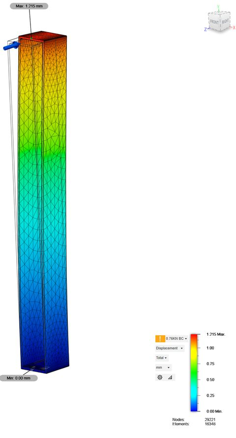
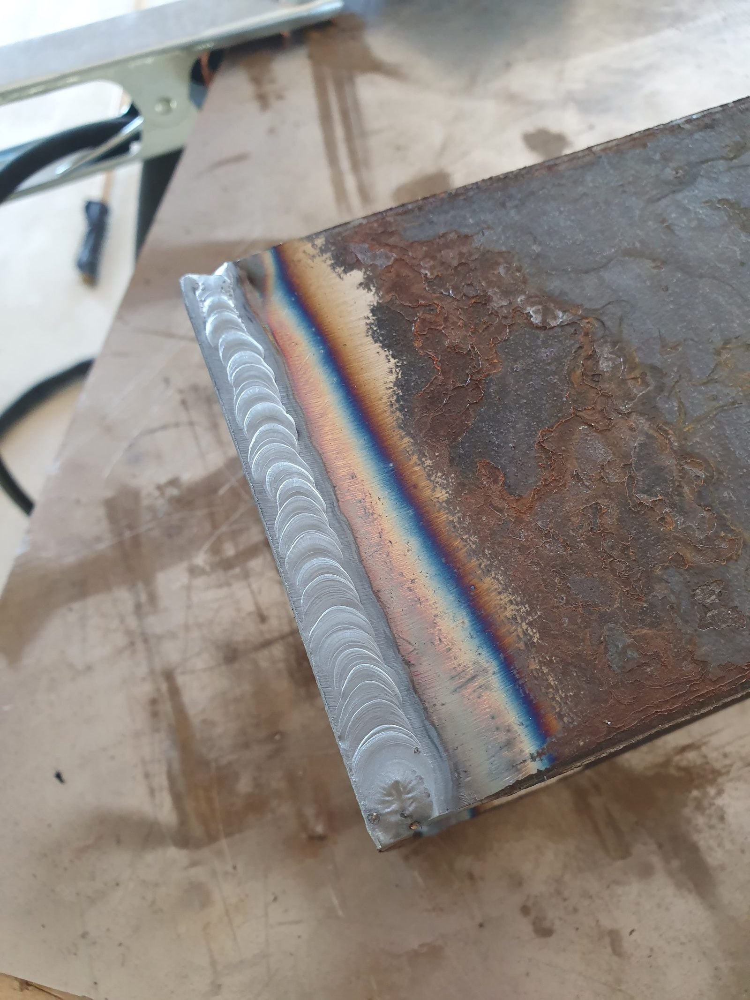
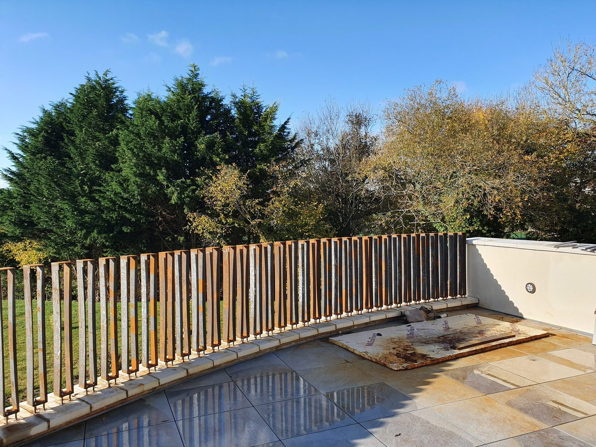
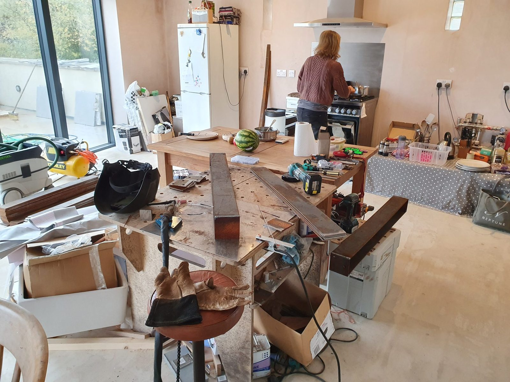

Cutting
Weathering steel / FEA / fabrication
Corten Balustrade
Curved terrace balustrade. Designed it, checked it with FEA, fabricated it from box section, then left it outside to rust on purpose.
Architecture, structural judgement, and a lot of repetitive welding. A bought-in railing would have taken an afternoon.

- Material
- —
- Sections
- —
- Welding process
- —
- Design check
- —
- Run length
- —
- Build time
- —
What the FEA actually said
To be written up.
What I would change
To be written up.
Design check
FEA before cutting steel
FEA on the post design and deflection under load, before making a long row of identical mistakes in expensive steel. Screenshot shows displacement, worst at the loaded end.

Welding
From box section to balustrade.
The constraint
Setting out the curve
The wall curves, so the balustrade had to follow it without looking fussy. Repeated verticals make the curve readable. The rust softens it against the fields.
Simulation
Design and analysis
Model the loads, make the parts, check the fit, weld it up. Then the weather does the last finishing pass. Corten is the only material I have used where rusting is the plan.
Domestic fabrication
Fabricating in a half-built house
Some of it was welded on a table in the unfinished kitchen. Very on-brand for this house build. Dinner in the background, steel on the table, tools everywhere.
In use
It became part of the place.
My favourite photos are not the fabrication ones. They are the ones with people leaning on it, talking, looking at the fields.







